Paros and Antiparos had been on our Greek island wish list for some time, so when we found ourselves travelling from Athens, it seemed the perfect opportunity to explore them.
After a ferry journey from Piraeus, we arrived in Parikia, the main port of Paros, where the usual Greek island arrival chaos was already in full swing. Taxis, hire cars, suitcases and people all heading in different directions.
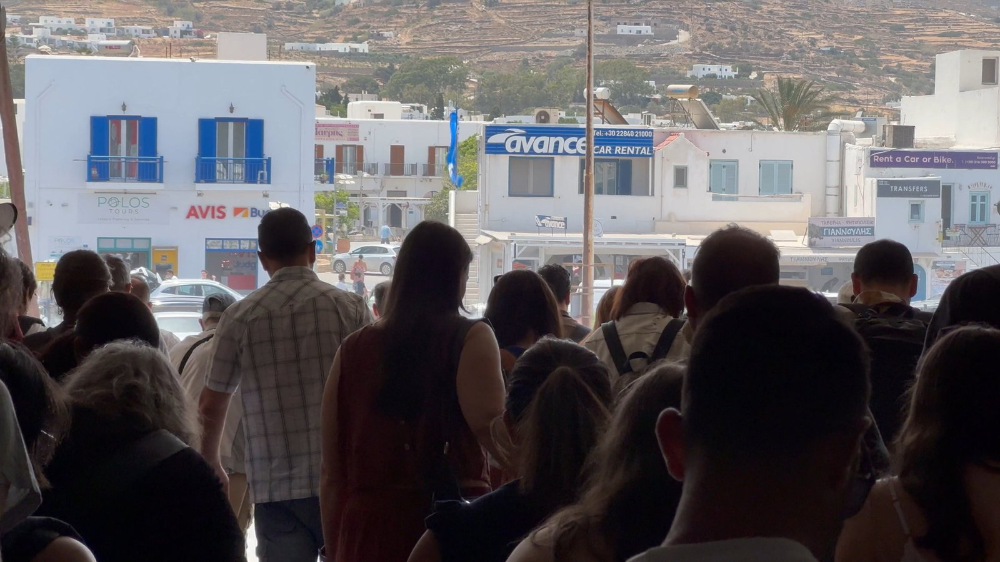
Welcome to island life!
We had a lovely base overlooking the sea, explored the island's villages, found some rather memorable places to eat and took a little ferry across to Antiparos. Both islands have plenty going for them, but as we discovered, they have quite different personalities.
PAROS – WHAT TO EXPECT
Paros is one of the better-known islands in the Cyclades, and it's not difficult to see why. Think whitewashed buildings, blue shutters, colourful bougainvillea, little fishing harbours and beaches with water so clear you could almost forget to get out of it.
The island has a good mixture of traditional Greek character and modern holiday appeal. There are lively resorts, sleepy fishing villages, beautiful beaches and plenty of restaurants, bars and boutiques. It's also a popular choice for island hopping, with ferries connecting it to Athens and several neighbouring islands.
Parikia, on the western coast, is the island's capital and main ferry port. It's busy, practical and full of life, with a waterfront promenade, shops and a maze of narrow streets behind the harbour. Further north, Naoussa has a rather more polished appearance, with its picturesque fishing harbour, stylish restaurants and boutique shops.
There is no shortage of places to explore, although Paros isn't exactly a bargain destination. It's not quite Santorini prices, thankfully, but you'll certainly notice that you're on a popular Greek island when the bill arrives!
WHERE WE STAYED – ANNA PLATANOU SUITES
We stayed at Anna Platanou Suites, around 4km outside Parikia, in the Agia Irini area. One thing worth mentioning is not to confuse this property with its sister hotel, Anna Platanou Hotel, which is closer to the port.
You'll need a car or taxi to reach the suites, but for us, escaping the immediate hustle and bustle of Parikia was definitely the right decision.
The property is family-run, and the welcome from Anna and Maria was lovely. Our suite was beautiful, modern and decorated in crisp white, with little splashes of blue that gave it that unmistakable Greek island feel.
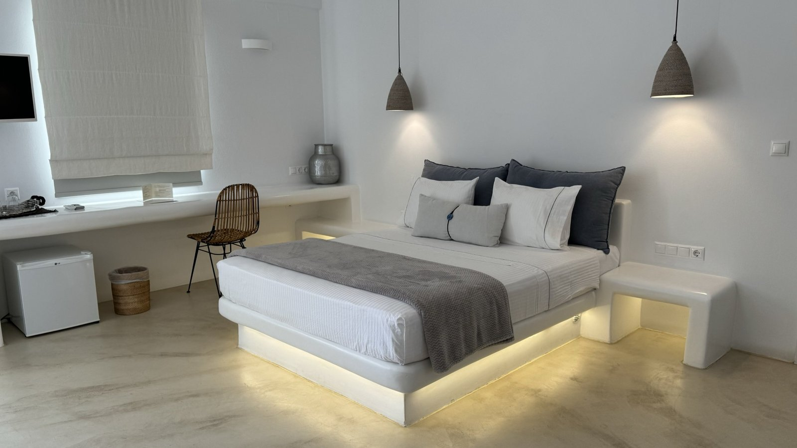
But the real highlight was outside.
We had a large private patio with a hot tub, comfortable seating and a rather lovely rope-style shade screen that gave the whole space a slightly Bali-inspired feel. Beyond it, we had uninterrupted views across the sea towards Antiparos.
After the chaos of arriving at the ferry port, sitting outside with those views was a very welcome change of pace. Add in the homemade breakfast and friendly hospitality, and it made a lovely base for exploring.
EXPLORING PARIKIA – HARBOUR LIFE AND GREEK SHOPPING
Parikia is a lively little town, and although it might not have the picture-perfect appeal of Naoussa, it has plenty of character.
The waterfront is lined with cafés, bars and tavernas, and the harbour is a great place to wander, particularly towards sunset. Behind the seafront, the old town is a maze of narrow cobbled lanes, whitewashed houses and little shops selling everything from handmade jewellery and ceramics to clothes and local crafts.
We particularly enjoyed wandering around the old market streets. It's the sort of place where you set off looking for one particular shop and somehow end up somewhere completely different. Not necessarily a bad thing when you're on holiday!
There are also a few historical sights worth looking out for, including the Frankish Castle, which incorporates ancient stonework, and the famous Panagia Ekatontapiliani, often called the Church of a Hundred Doors, one of the island's most important religious monuments.
If you fancy a beach without travelling too far, Livadia Beach is just beyond the port. Krios and Parasporos are other options within easy reach.
Bountaraki
We were recommended a family-run taverna called Bountaraki, towards the end of Parikia's promenade. It turned out to be an excellent recommendation.
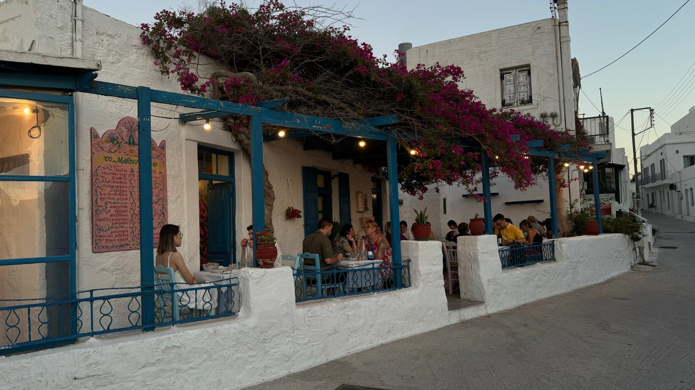
You can't book, and during busy periods there's a queue of people waiting for a table, which is usually a promising sign. We shared fish, saganaki and a Greek salad, and it definitely lived up to its reputation. It's not the place to go if you're in a hurry, but then again, who should be in a hurry when they're eating beside the sea in Greece?
Definitely one to put on your list.
NAOUSSA – PRETTY, POLISHED AND VERY BUSY
We took a drive north to Naoussa, around 15–20 minutes from Parikia.
If Parikia is the island's working capital, Naoussa is its glamorous little sister. Once a traditional fishing village, it has become one of the island's most fashionable holiday destinations.
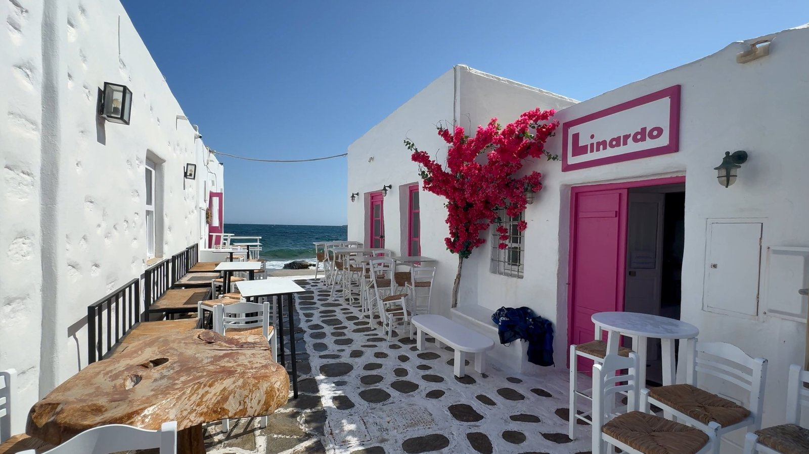
The harbour is undeniably pretty, with fishing boats bobbing in the water, waterfront restaurants and narrow streets winding between whitewashed buildings. There are stylish boutiques, lovely cafés and plenty of places to enjoy a drink or settle down for dinner.
It's also a great base if you're looking for a livelier holiday, with some of Paros's best-known beaches nearby, including Kolymbithres, Monastiri and Santa Maria.
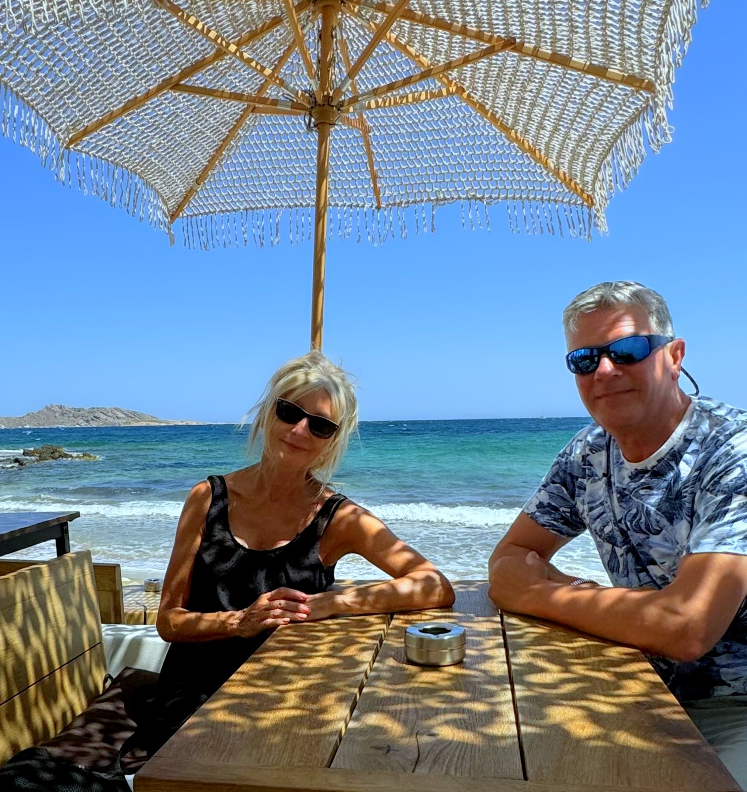
However, there's no getting away from the fact that Naoussa is very popular. In peak season, it can be extremely busy, and the restaurants and boutiques are geared towards visitors with money to spend.
It's lovely to visit, but would we want to stay there? Probably not. We prefer somewhere a little more laid-back, where you can wander without feeling you're following a procession of holidaymakers.
If you're looking for a lively atmosphere, excellent dining and plenty happening in the evenings, Naoussa could be just the place. If peace and quiet are higher on your holiday wish list, perhaps think twice before booking your accommodation here.
ALIKI – A FISHING VILLAGE AND A VERY GOOD LUNCH
One of our favourite discoveries was Aliki, a traditional fishing village on the southern coast of Paros.
It's a different experience from the busier northern resorts, with a lovely waterfront, fishing boats and a choice of beaches and seafood tavernas. It has a much more relaxed atmosphere, and we could quite happily have spent longer here.
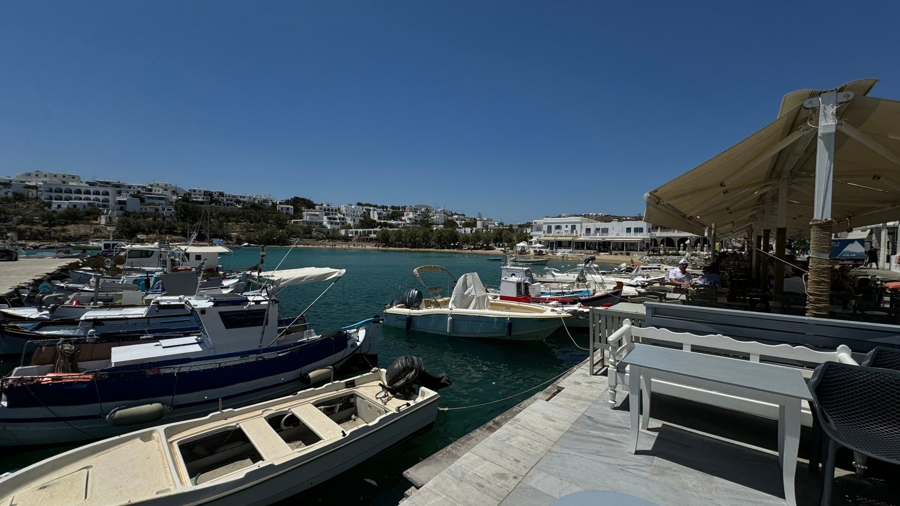
But we weren't just there for the scenery. We had a mission:
lunch!
We found a wonderful family-run seafood restaurant called The Balcony, where the tables were practically on the sand, with the sea lapping just a few feet away.
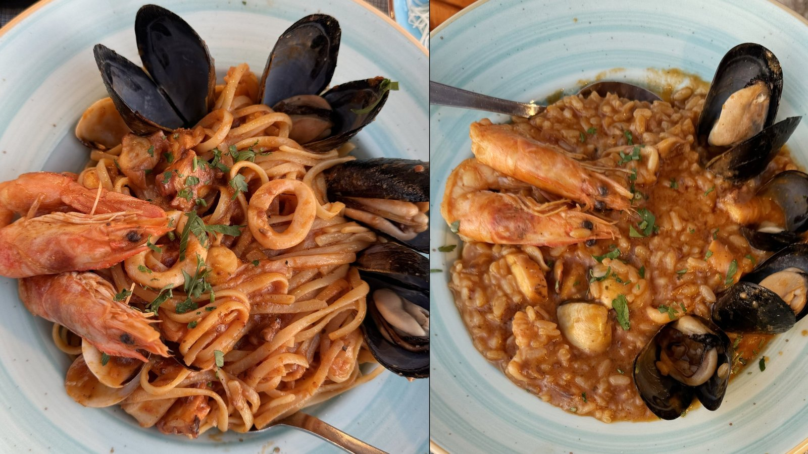
And the food? Absolutely delicious. We ordered seafood risotto and seafood linguine, and both were so good that we returned the following day. There was even a huge swordfish displayed outside, presumably to tempt passing seafood lovers through the door. It certainly worked on us!
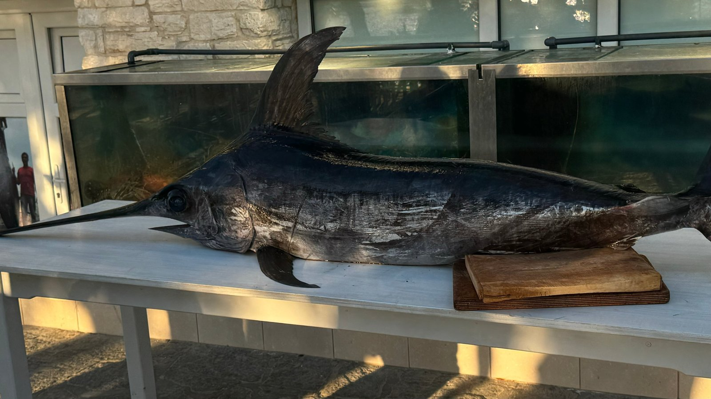
It's these little discoveries that often make a holiday, and The Balcony was one of those places we were very glad to have stumbled across.
ANTIPAROS – THE LITTLE ISLAND THAT STOLE THE SHOW
Now, if there's one thing I'd recommend doing while visiting Paros, it's taking the ferry across to Antiparos.
And I have to say, this little island was rather special.
The ferry crossing from Pounda takes only around 7–10 minutes, making it an easy day trip. You can take your car across too, which is what we did, and I'd recommend it if you want to explore beyond the main town.
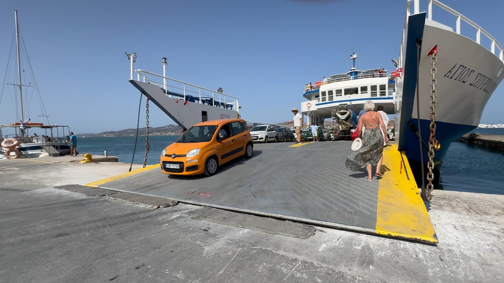
Antiparos has a completely different feel from its bigger neighbour. The harbour has a lovely, relaxed atmosphere, with fishing boats, cafés and tavernas. There are attractive little boutiques selling some rather unusual and stylish products, and the whole place has a laid-back but slightly sophisticated feel.
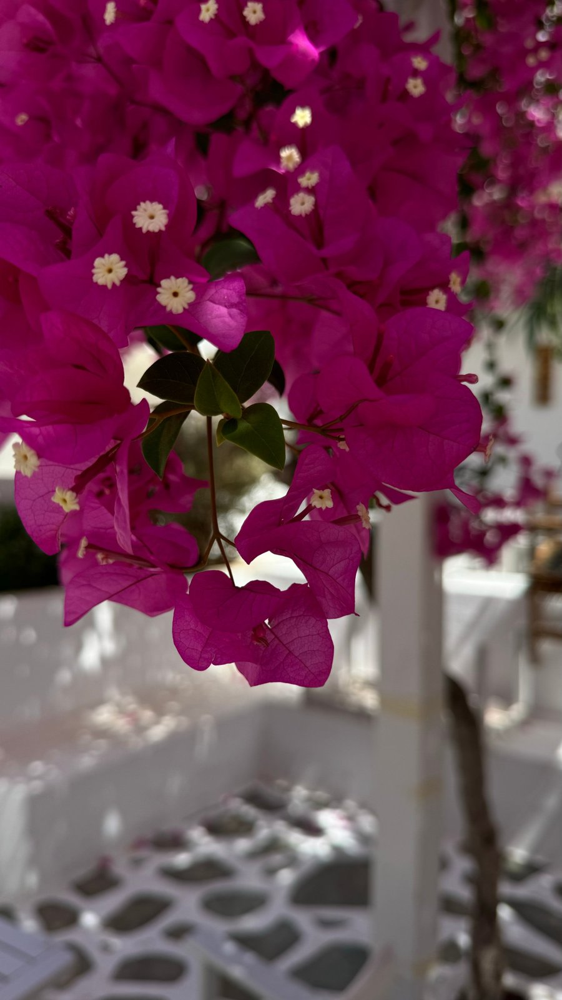
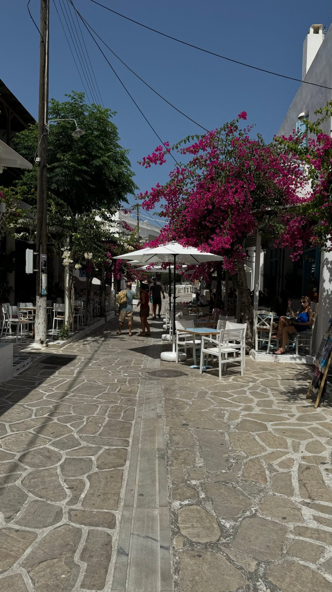
We enjoyed wandering around the town, browsing the shops and taking in the atmosphere. Although a word of warning: those lovely boutiques aren't necessarily cheap. Window shopping is considerably more affordable!
Captain Pipinos
But our favourite discovery was further south, in the beautiful bay of Agios Georgios. We took the drive down to find Captain Pipinos, a family-run seafood taverna with a long history in this little corner of the island.
This is one of those places where you really do need to sit back and appreciate where you are.
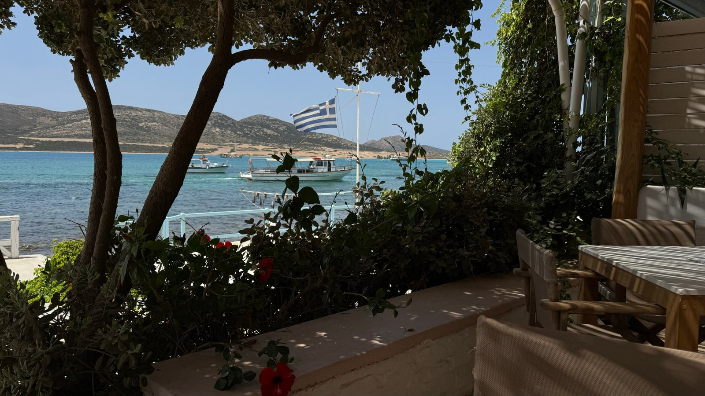
The taverna sits beside the water, with the most incredible views across the bay. We managed to get a sea-view table, ordered some drinks and simply enjoyed the surroundings.
Octopus was hanging out in the sunshine to dry, a sight that always makes me think we're somewhere very authentically Greek. There's something wonderfully uncomplicated about a seafood restaurant where the day's catch is practically on display outside.
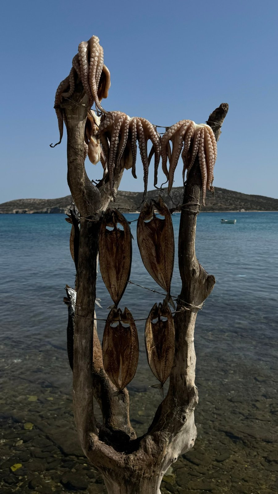
The water was unbelievably clear, the setting was beautiful and the atmosphere was wonderfully relaxed. It was well worth the drive from the harbour.
Captain Pipinos was one of our standout experiences on Antiparos, and I'd certainly recommend making the journey down to Agios Georgios rather than spending all your time in the main town.
PRACTICAL TIPS FOR VISITING PAROS AND ANTIPAROS
- Getting there: Ferries from Piraeus in Athens generally take around 3–5 hours, depending on the service. Faster crossings can take less than three hours. Check schedules before travelling, and see our island hopping guide.
- Getting around: A hire car is useful for exploring Paros, particularly if you want to discover the smaller villages and beaches. Buses also connect Parikia with Naoussa and other popular destinations. Read our car hire tips before you book.
- Visiting Antiparos: Ferries run frequently from Pounda on Paros to Antiparos, with the crossing taking approximately 7–10 minutes. Foot passengers and vehicles can travel.
- Where to stay: Parikia is convenient for transport and has plenty of restaurants. Naoussa is better suited to those wanting a lively holiday with fashionable restaurants and nightlife. For somewhere quieter, look at the smaller coastal villages.
- When to visit: July and August are the busiest months. June and September offer a good balance of warm weather and fewer crowds. See our guide to when to go.
- Budget: Neither island is particularly cheap. Expect to pay more for accommodation, restaurants and shopping than you might on some of the less-visited Greek islands.
OUR VERDICT – WOULD WE RETURN TO PAROS AND ANTIPAROS?
We enjoyed our time on Paros, particularly our lovely accommodation, the food discoveries in Aliki and wandering around the old streets of Parikia. Naoussa was pretty, but a little too busy and touristy for our tastes.
Antiparos, however, was the real surprise. It had a lovely atmosphere, beautiful scenery and some wonderful places to eat, with Captain Pipinos being a particular highlight.
Would we return? Probably not, if we're being honest. Neither island quite captured the quieter, more traditional Greek island experience that we tend to look for.
But if you're after beautiful beaches, plenty of restaurants, stylish shops, lively evenings and easy island hopping, both are definitely worth considering.
And if you visit Paros, don't make the mistake of missing Antiparos. It's only a short ferry ride away, and for us,
it was the little island that made the trip.